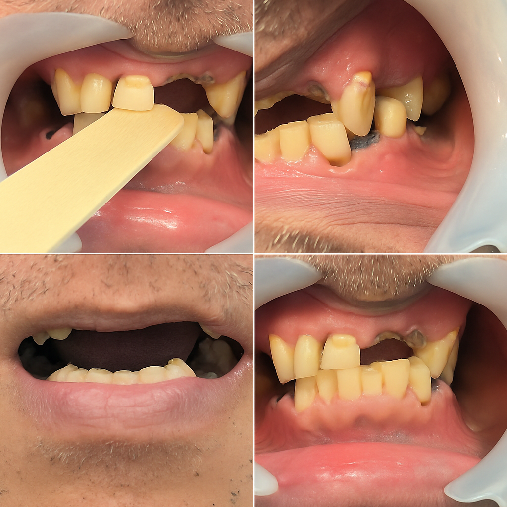

🟦 Clinical Insight
روند منطقی «تهیهٔ فضا» در بیمار فاقد استاپ خلفی — از تحلیل تا تصمیمگیری
وقتی استاپ خلفی در سیستم اکلوژن از بین میرود، یک روند نسبتاً قابلپیشبینی شروع میشود:
- فک در مسیر بستهشدن، بدون کنترل تماسهای خلفی حرکت میکند
- VDO بهتدریج کاهش پیدا میکند
- دندانهای قدامی سالها تحت فشار قرار میگیرند و ساییده میشوند
- دندانهایی که دندان مقابل خود را از دست دادهاند، سوپرااِراپت میشوند
- در نهایت پلان اکلوژن بههم میریزد
- و فضای ریستوریتیو محدود میشود
در کیس حاضر، کل استاپ خلفی سیستم از دست رفته است.
اینجا «تهیهٔ فضا» یک روند چندمرحلهای و تحلیلی است، نه یک مداخلهٔ لحظهای.
1️⃣ مرحلهٔ اول: تحلیل ذهنی — اگر قدامیها به طول واقعی برگردند، چه میشود؟
در این مرحله قدامیها را واقعاً بلند نمیکنیم.
کاری که انجام میدهیم این است که تصور میکنیم اگر:
- قدامیها طول واقعی و اولیهٔ خود را داشته باشند
- و رابطهٔ عمودی فک در مقدار اصلی قرار بگیرد
چه اتفاقی برای سیستم میافتد؟
بررسی میزان سایش قدامیها برای تخمین اندازهٔ اصلی بسیار کمککننده است؛
تخمین میزنیم اگر این دندانها ساییده نبودند، فک چقدر باز میشد.
این تحلیل ذهنی فقط یک هدف دارد:
تخمین اینکه بیمار احتمالاً چقدر VDO از دست داده است.
پس این مرحله یک شبیهسازی ذهنی (simulation) است — نه درمان، نه آمادهسازی، نه تراش.
صرفاً یک روش تشخیصی برای تعیین نقطهٔ شروع برنامهریزی.
بعد از این تحلیل میفهمیم:
- ارتفاع فکی در حالت طبیعی احتمالاً چقدر بوده
- فضای قدامی و خلفی چقدر باید باز شود
- و پلان اگر به حالت اصلی برگردد، چه شکلی خواهد بود
2️⃣ مرحلهٔ دوم: تصمیمگیری — آیا اصلاح نیازمند اقدامات جمعی است؟
وقتی فهمیدیم «در حالت طبیعی» فضا باید چگونه باشد، نوبت تصمیمگیری است:
آیا با بازگشت به حالت طبیعی، فضای کافی ایجاد میشود؟
- اگر بله → نیازی به افزایش بیشتر VDO یا جراحی نیست.
- اگر نه → باید وارد اصلاحات جمعی شویم:
- افزایش بیشتر VDO
- جراحی افزایش طول کران
- یا ترکیب این دو
این اقدامات زمانی لازماند که فضای طبیعی کافی نباشد و لازم باشد فضا بیشتر از مقدار تخمینی واقعی سابق باز شود.
3️⃣ مرحلهٔ سوم: اگر فضای طبیعی کافی باشد → ورود به اصلاح فردبهفرد
در این کیس دقیقاً همین اتفاق افتاد:
با همان مقدار VDO از دسترفته،
وقتی فرض کردیم سیستم به مقدار طبیعی برگردد،
فضای ریستوریتیو بهاندازهٔ کافی باز میشد.
بنابراین نیازی به:
- افزایش بیشتر VDO
- یا جراحی افزایش طول
نداشتیم.
از این نقطه به بعد، درمان از حالت «جمعی» خارج میشود و فردبهفرد ادامه پیدا میکند.
4️⃣ مرحلهٔ چهارم: تشخیص دندانهای مقصر — با نیمهباز کردن دهان
برای تعیین اینکه کدام دندانها باید اصلاح شوند:
- دهان را در وضعیت نیمهباز قرار میدهیم
- پلان صحیح اکلوژن (آنچه در پروتز متحرک آموختهایم) را در ذهن فراخوانی میکنیم
- تکتک دندانها را با این پلان صحیح مقایسه میکنیم
- میبینیم هر دندان چقدر و در چه جهتی از پلن خارج است
این روش ابزاری مناسب است برای تشخیص:
- دندانِ مقصر در بههمریختگی پلان
- و میزان تقصیر هر دندان در محدود کردن فضای ریستوریتیو
سپس برای هر دندان تصمیم میگیریم:
- اصلاح ارتفاع (Recontouring)
- اصلاح ساختار
- یا حذف/کشیدن، اگر با هیچ اصلاحی داخل پلان قابلقبول قرار نمیگیرد
در این فاز، درمان از یک کار «جمعی» تبدیل میشود به:
Case-by-Case → Tooth-by-Tooth
🟦 جمعبندی نهایی
«تهیهٔ فضا» در این نوع بیماران یک روند سهمرحلهای است:
- تحلیل ذهنی:
اگر قدامیها طول واقعی داشته باشند، «VDO اصلی» و «وضعیت طبیعی فضا» چه شکلی خواهد بود؟
- تصمیمگیری کلان:
اگر فضای طبیعی کافی باشد → وارد اصلاح فردبهفرد میشویم.
اگر کافی نباشد → به سراغ افزایش بیشتر VDO یا جراحی افزایش طول میرویم.
- اصلاح فردبهفرد:
با نیمهباز کردن دهان و مقایسهٔ دندانها با پلان صحیح، تکتک دندانها بررسی و اصلاح میشوند.